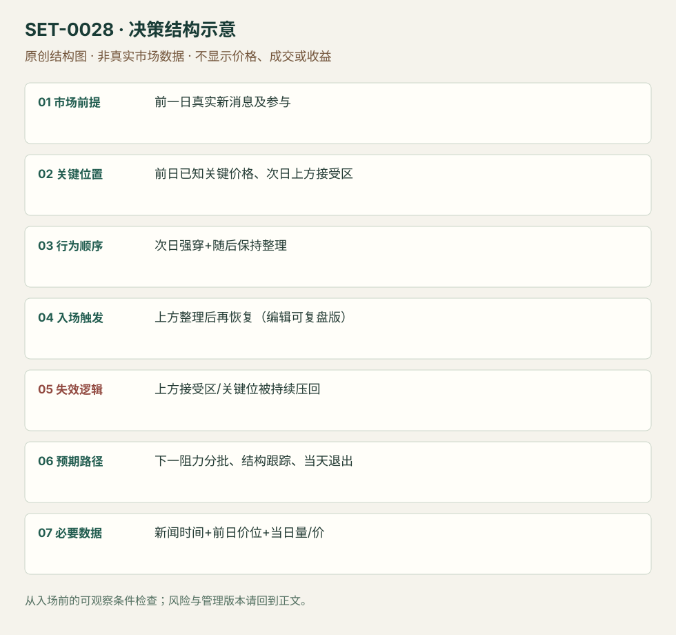

新消息后的第二日关键位接受
Second-day News Acceptance Play · SET-0028 · reviewed · v1.0.0
盈利证据：not_established。审查范围与来源版本见第13节；未知字段保留缺失原因。
1. 名称与快速概览
前一日重要新信息带来参与和清晰价位；次日仍显示主动性，跨过关键位并在上方形成接受区，交易后续延续。不是任何第一天上涨后第二天小旗都符合。
记录口径：PA supporting；必要数据 OHLC、volume、news、prior_day_levels。名称性质：编辑性描述名，英文保留来源术语以便检索。reviewed 只表示本条规则与证据记录审查通过，盈利状态为 not_established。
2. 本质与行为假说
新信息未一次完成定价是行为假说，前日变化与当日接受都必须观察。先验催化影响对象、前日关键位和次日量/价确认共同决定机会，不凭“利好还会发酵”持仓。
3. 适用市场与环境
来源MRNA重大合同消息次日、AAPL与市场分歧后的次日机会。适合仍有明显相对参与且前日参考未被否认；信息已更正、次日直接跌破重要接受区则不成立。
来源实用市场：美国个股。
Session：美股/ES现金参考段 09:30–16:00 America/New_York；收盘前平仓。期货夜盘单独建背景，不将其并入开盘区间。
跨市场：本版不主张已经验证的跨市场迁移；更换市场必须重定数据来源、流动性与session。
4. 出现前的观察清单
保存原新闻来源与时间、前日高低/收盘/接受位；整理不同情境路线，比较同一开盘时刻相对成交。日线目标可能属于swing，日内目标另外选。
5. 形成过程与状态转换
第一日重大催化形成参考 → 第二日初段强穿关键位 → 上方保持且卖出不能压回 → 小区间后继续上推 → 跟随结构或在接受失败时退出。
6. Entry trigger 与执行方式
公开逐字稿以第一轮越位和保持为核心；编辑复盘版在上方整理后重新越过整理高进入，使失效区可见。第一轮直接追与整理后二次入场分版本，不把两次成交计两个setup。
7. Invalidation 与止损逻辑
整理下沿/关键位下方重新被接受是原方向失效，选哪一层在交易前固定。原文没有统一机械缓冲，因此编辑的价位止损不能继承作者口头收益。
8. Exit、target 与 trade management
下一已知阻力和驱动衰退处分批，保持区逐步抬高才跟踪；到日终平仓。SMB AAPL 的更远日线目标与跨日机会只是背景，本条不把它当日内必达目标。
9. 常见 variations
合同、财报、监管消息是事件类别，计同一信息延迟接受机制；不同日线关键位和时间长度是版本。无新消息的普通旗形归0015。
10. 失败方式与不交易条件
新闻读错或已更正；次日没有相对量；开盘强冲随后接受回关键位下方；目标过远转成swing；用后来的第二次强推才反向挑“重要”价位。
11. 与相近 setups 的区别
12. 图表与案例解读
视觉缺口：MRNA网页的公开逐字稿谈及图表，但未取得和查看对应画面，因此没有把口述的10–15分钟/20分钟结构列为已看案例。
本地原创示意（VIS-000085，非真实市场数据）：

小屏阅读可打开原尺寸示意图并缩放。

此图用于对照识别顺序与风险定义；不计入真实案例覆盖率。
视觉材料元数据与查看范围
- VIS-000085 · synthetic_structure_diagram / illustration_only / generated_not_market_evidence
品种：未知/不适用；日期：未知/不适用；周期：未知/不适用；时区：未知/不适用
无真实品种、日期或价格：这是结构示意
13. 证据、分歧与未知项
两条来源都属SMB家族。实际阅读了公开网页逐字稿，没有看视频/图表或核对时间码；核心佐证与视觉案例仍有限。
- [EVD-000053] Steve Spencer，《The Explosive Second Day Play》，SRC-0050；定位：公开逐字稿：MRNA second day / first10–15min / consolidation。支持：前一日重大催化与3个关键位，第二日头10–15分钟强突破，随后约20分钟保持再延续；分开重要消息与实际价格确认。
- [EVD-000054] Jeff Tomasulo，《Second Day Play》，SRC-0049；定位：Second Day Play: AAPL / SPY levels。支持：第二日仍需股票/市场关键位和成交共同确认；125–126等价格仅属于原案例。
审查边界：来源份数与独立核心核验分开；当前类别为 limited_single_family。正文中的概念、官方事实、衍生解说或同族资料只按其支持范围使用。
- [EVD-000103] 编辑操作化，未测试：第二日消息关键位上方接受后，采用整理端点再恢复作为可复盘触发，版本未测试。 原文边界：公开转写描述MRNA第二日驱动后整理再推，不给跨股票统一参数。
14. 可用于复盘的检查表
- ☐ 下单前的前提可核对：前一日真实新消息及参与
- ☐ 事前标记位置：前日已知关键价格、次日上方接受区
- ☐ 行为按顺序出现：次日强穿+随后保持整理
- ☐ 实际触发符合选定版本：上方整理后再恢复（编辑可复盘版）
- ☐ 事先写明本次否定条件：上方接受区/关键位被持续压回
- ☐ 目标/路径只用当时已知信息：下一阻力分批、结构跟踪、当天退出
- ☐ 数据满足 新闻时间+前日价位+当日量/价；记录时间、点差、滑点、队列和未成交
- ☐ 记录截止平仓及规则偏离；正常亏损不事后改成“未成立”
15. 后续验证问题
第2日延续相对普通高RVOL旗形有额外信息吗？重要价位能否第一天结束时固定？消息更正日应怎样剔除？
双向相关导航
- SET-0027 市场确认后的个股相对强弱交易 0028 必须有前一日新消息和次日关键位接受；本条不必须第二天事件。
- SET-0015 缩量普通回撤后的成交恢复 0015 是普通趋势的低量回调；本条必须前日重大信息和次日的关键位接受，不能只加一个news标签。
- SET-0029 突发新闻的第一轮价格反应 0029 捕捉刚发布后的第一分钟；本条在事件次日经过新的接受过程。